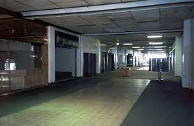

Often a space of transition.
A place you end up on your way to another place.
The in-between.
A feeling of unease as if you are somewhere that you are not supposed to be.
These spaces tend to be empty in the sense that they lack activity where there is supposed to be activity. Examples of this emptiness include: